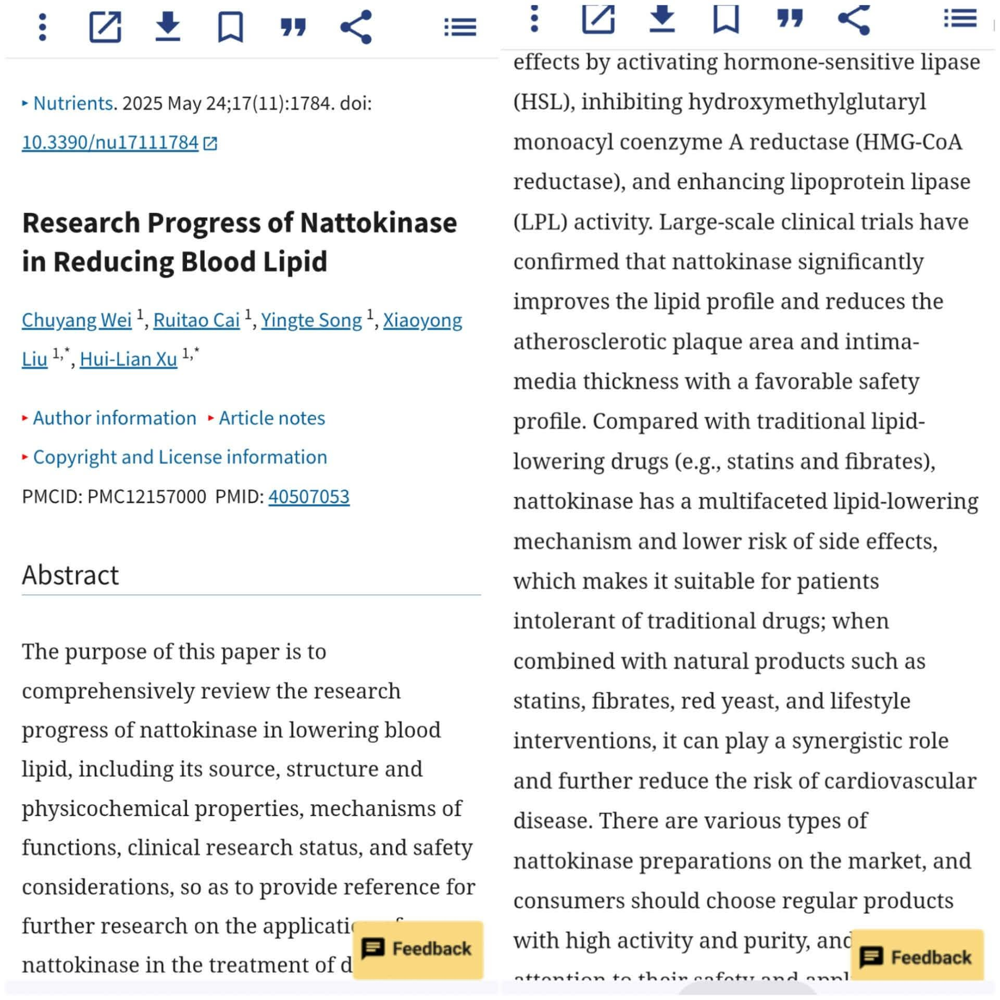
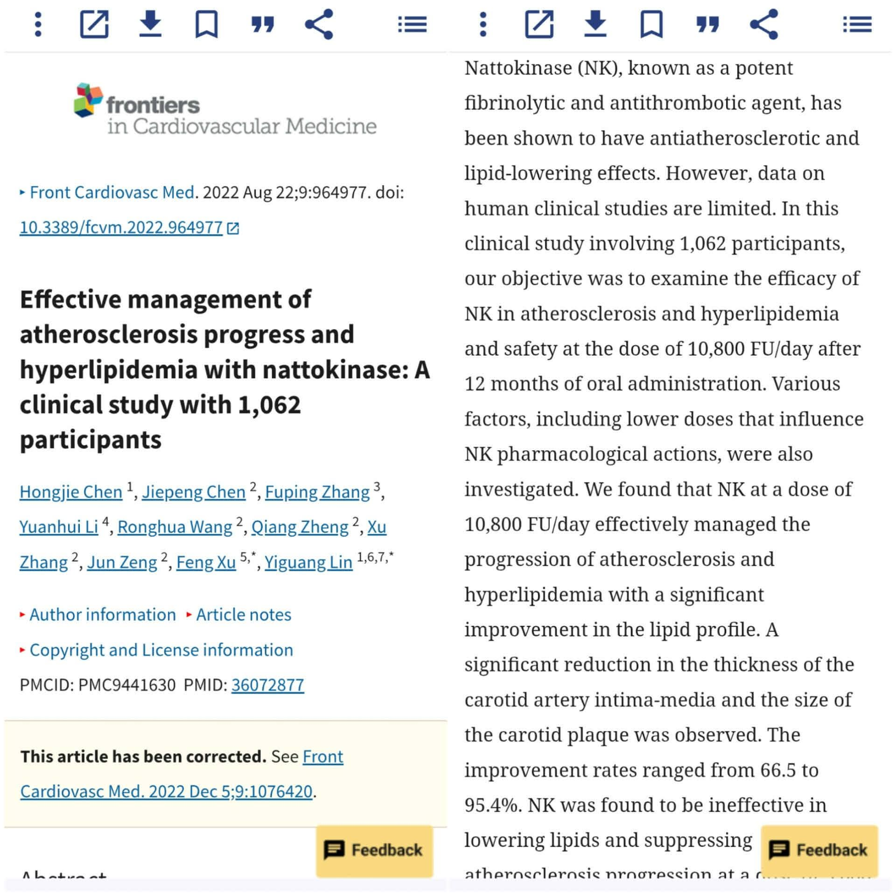
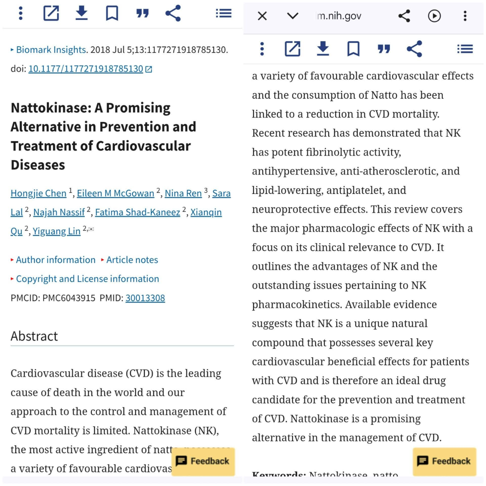
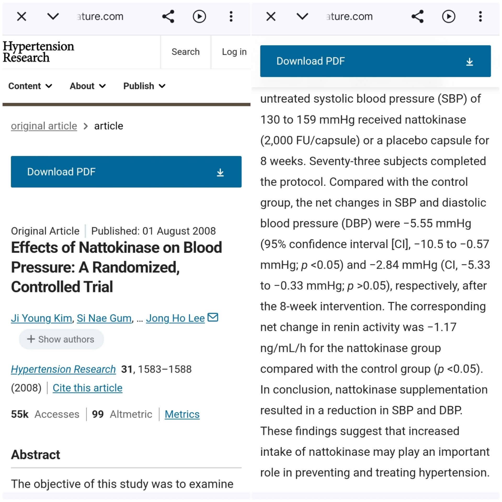

Nattokinase deserves to be studied more extensively. Unfortunately, the existing studies in humans are small and lower quality. This post is a decent overview.
#nattokinaseHD #nattoHD #fibrinHD #fibrinolysisHD #bloodclotsHD #thrombosisHD #bloodpressureHD #hypertensionHD
Cardiovascular prevention has been held hostage to a #cholesterol story, but arteries do not just accumulate cholesterol. They respond to injury, inflammation, oxidation, and endothelial dysfunction!! And when the vascular surface is disrupted the body does what it is designed to do, forms clot. So the question is not only whether clot forms. The question is whether the body can resolve it appropriately? Because clot builds upon itself.
That is where #nattokinase becomes relevant.
Natto is a traditional Japanese food made by fermenting soybeans with Bacillus subtilis. It is not commonly used in Western diets but from a physiologic standpoint it is one of the most interesting cardiovascular foods because it contains nattokinase, a serine protease with fibrinolytic activity.
Nattokinase was originally characterized as an enzyme capable of directly degrading fibrin which is the backbone of clot (Sumi et al., Experientia 1987). That was the starting point but its effects extend beyond direct fibrin cleavage.
It appears to support endogenous fibrinolysis by increasing tissue plasminogen activator activity and reducing plasminogen activator inhibitor-1. Because PAI-1 inhibits tPA, lowering PAI-1 moves the system toward greater plasmin generation and therefore more effective fibrin breakdown (Chen et al., Biomarker Insights 2018). Human data suggest that this translates into measurable changes in the clotting environment with reductions in fibrinogen, factor VII, and factor VIII observed after supplementation (Hsia et al., Nutrition Research 2009).
There are also randomized data demonstrating modest reductions in blood pressure, reinforcing that this is an active biologic compound with systemic effects (Kim et al., Hypertension Research 2008).
And this matters because not all cardiovascular risk is driven by cholesterol alone, and Lp(a) is a clear example of this. It is an LDL-like particle, but its apolipoprotein(a) component structurally resembles plasminogen, which means it can interfere with fibrinolysis and promote clot persistence. In that environment, the problem is not just plaque formation. It is impaired clot resolution too.
So within that framework, natto is not relevant because it lowers LDL, it is relevant because it introduces a compound that interacts with the fibrin system and supports the resolution phase of thrombosis. It moves the physiologic balance away from clot persistence and toward clot breakdown.
And remember, it is the clot that kills!! Not the cholesterol.
Now I'm not saying that this is a replacement for lipid management. Rather it It is an expansion of the pervasive model. Atherothrombosis is not a single-axis disease. It reflects the interaction of particles, endothelium, inflammation, oxudation, and fibrinolysis.
And nattokinase sits squarely in the #fibrinolysis domain which is the most deadly. And too many of us don't even measure it!!
#MeasureThePhysiology
#CardiovascularHealth
#integrativemedicine
#integrativecardiology




